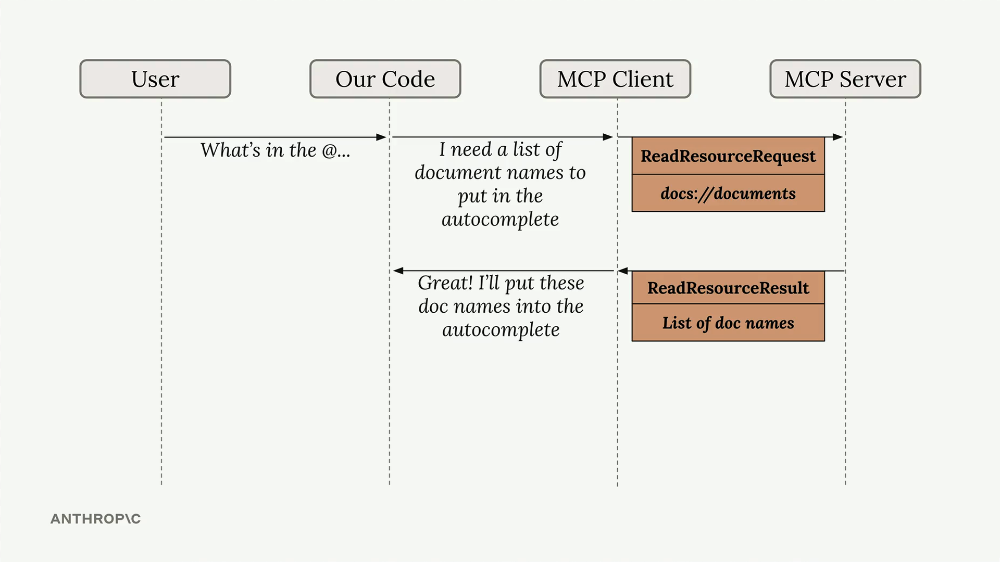

Чтение ресурсов
Чему научитесь
Видео 4:38 и текст урока
К концу урока вы сможете:
- реализовать в MCP-клиенте функцию
read_resource, которая запрашивает ресурс по URI; - разбирать ответ сервера: список
contentsи MIME-тип содержимого; - объяснить, как @-упоминание подставляет документ прямо в промпт, без вызова инструмента.
Видео и текст урока.
Смотреть урок на Skilljar Accessing resources · 4:38Ресурсы в MCP позволяют серверу отдавать информацию, которую можно напрямую включить в промпт, — без вызовов инструментов для доступа к данным. Это более эффективный способ передать контекст ИИ-моделям.

ReadResourceRequest для docs://documents → ReadResourceResult со списком имён документов для автодополнения.На схеме выше показано, как работают ресурсы: когда пользователь пишет что-то вроде «What’s in the @...», наш код распознаёт в этом запрос ресурса, отправляет MCP-серверу ReadResourceRequest и получает в ответ ReadResourceResult с самим содержимым.
Реализация чтения ресурсов
Чтобы MCP-клиент мог получать ресурсы, в нём нужно реализовать функцию read_resource. Сначала добавьте нужные импорты:
import json from pydantic import AnyUrl
Основная функция отправляет запрос MCP-серверу и обрабатывает ответ в зависимости от его MIME-типа:
async def read_resource(self, uri: str) -> Any:
result = await self.session().read_resource(AnyUrl(uri))
resource = result.contents[0]
if isinstance(resource, types.TextResourceContents):
if resource.mimeType == "application/json":
return json.loads(resource.text)
return resource.text
Из чего состоит ответ
В ответ на запрос ресурса сервер возвращает результат со списком contents. Мы берём первый элемент, потому что обычно нужен только один ресурс за раз. В ответе есть:
- само содержимое (текст или данные);
- MIME-тип, который подсказывает, как разбирать содержимое;
- другие метаданные ресурса.
Обработка типов содержимого
Функция проверяет MIME-тип, чтобы решить, как обработать содержимое:
- если это
application/json— разобрать текст как JSON и вернуть получившийся объект; - иначе — вернуть текст как есть.
Так функция без лишних хлопот справляется и со структурированными данными (например, JSON), и с обычными текстовыми документами.
Проверка доступа к ресурсам
Когда функция готова, работу с ресурсами можно проверить в CLI-приложении. Если набрать «@» и имя ресурса, система:
- покажет доступные ресурсы в списке автодополнения;
- даст выбрать ресурс стрелками и пробелом;
- включит содержимое ресурса прямо в ваш промпт;
- отправит всё модели без дополнительных вызовов инструментов.
Для пользователя это гораздо удобнее, чем когда модель отдельными вызовами инструментов читает содержимое документов. Содержимое ресурса сразу становится частью исходного контекста, и модель может немедленно отвечать на вопросы об этих данных.
Дальше
Следующий урок — «Промпты в MCP»: третий примитив сервера, заранее подготовленные и проверенные промпты, которыми клиент пользуется вместо того, чтобы писать свои с нуля.
Оригинал урока: Accessing resources.